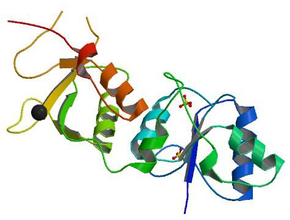
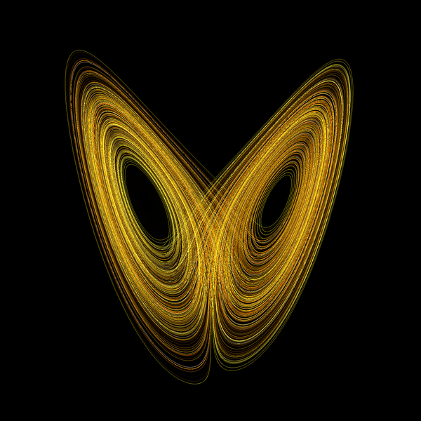
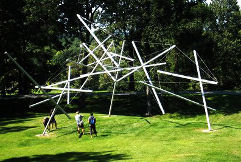

Proteins are among the most important molecules in living organisms: they take part in almost every process within cells. The majority of proteins have a well-defined space arrangement of their constituting parts – amino acids. Throughout the 20th century scientists believed that a prerequisite for proteins to function was their ordered structure. However, 10-15 years ago a distinct type of proteins was defined that defies this rule. They are called intrinsically disordered proteins (IDPs). The fact that they carry a certain amount of disorder in their structure distinguishes them from most other proteins. Disorder is known to help IDPs in carrying out their essential functions. However, it doesn’t come without a biological cost: disorder may have a role in the development of Alzheimer’s and Parkinson’s, neurodegenerative diseases that affect millions of people around the world.
In this project, we will try to answer some of the crucial questions about IDPs. We will use bioinformatics tools to predict the amount of disorder in our proteins. In addition to that, we will investigate how the basic characteristics of amino acids affect the prediction of disorder. To distinguish between structured proteins and intrinsically disordered ones we will use experimental techniques such as different types of electrophoresis. Some of the properties of IDPs like resistance to chemical denaturation and heat will help us in that process. Finally, by using a computational approach through molecular dynamics simulations we will try to conclude what is the functional role of disorder in our intrinsically disordered protein.
Antonija Burcul
University of Zagreb, Croatia
Antonija is a 2nd year bachelor student of chemistry at the University of Zagreb. Her scientific interests include biophysics and quantum chemistry. One of her passions is the popularisation of science. She is involved in the project “Magic in science” which, through interactive workshops, tries to show kindergarten children how exciting and fun science is. Antonija participated at S3++ 2009 as a high school student.
"Tea. Earl Gray. Hot." are the words captain Jean-Luc Picard would say to the replicator in order to get a cup of his favourite beverage. It is also a good example of automatic speech recognition - the process of converting spoken human speech to text. The idea of being able to talk to machines is still as exciting now as it was back in the time when SF classics such as "2001: A Space Odyssey" or "Star Trek" presented it in such a vissionary manner. Developed since the 1950s, automatic speech recognition is the focus of development in many scientific and industrial institutions all around the world. CMU, MIT and Microsoft R&D are the flagship examples with a long history in the field. Even after so much research, reaching the perfection of the human speech system remains an ideal yet to be achieved on a computer - it is still an open problem. The need to recognize many different languages further complicates the matter, since every new language with it's specifics requires custom approach. But as computational power drastically increases, more complex and robust systems can be built, bringing us closer to the image of human-computer interaction from the aforementioned fictional works.
In this project the participants will learn the theory behind modern speech recognition systems. The most important part is the "Hidden Markov model" as a representation of the speech pipeline and the core of the acoustic model. Additionaly, the language model is required, containing linguistic information derived from a large corpus of text. To better understand the theory, the participants will implement a concrete speech recognition system using the open source CMU Sphinx toolkit. The participants will create a speech corpus, train and test the speech recognition model on it and meassure the quality of the model's performance using parameters such as speed and word error rate (WER).
Drazen Lucanin
University of Zagreb, Croatia
Drazen is a fifth year student of computer science at the University of Zagreb. His main interests are program engineering and topics in the field of computer science, such as theoretical study of algorithms and artificial intelligence. During his studies and in his free time he took has done many different program solutions - from compilers to video-conferencing clients, using diffrent implementation technologies. He is currently studying advanced user interfaces and graphical programming.
Does the flap of a butterfly's wings in Brazil set off a tornado in Texas? According to the chaos theory there is a strong relation between these two, at first sight, unrelated phenomena. Climate is just one of the systems that are subjects of the chaos theory study. These systems are, in principle, determined by initial conditions, but small differences in initial conditions (butterfly flap) produce very different outcomes (tornado) for chaotic systems (climate), thus making long- term prediction (long-term weather forecast) impossible in general. Although the study of such systems must give up complete determinism, use of chaos theory can provide us with useful information about the system. Chaos theory emerged as a pure theoretical discipline but nowadays it has a wide range of applications from ecology to economics.
A water tap is one of the most ordinary devices, but there is something not so evident about it. As it was researched in 1970's inside chaos theory, the dripping tap provided an example of a system with dynamics which starts completely predictably, and then rapidly becomes unpredictable and chaotic. Dripping tap is therefore an excellent model for understanding basic concepts of chaos theory. In this project, we will measure time between falling drops in the leaky tap system using lasers and electronics, while changing water flow intensity. Our goal will be to examine whether there is transition from regular to a chaotic stage of water dripping via doubling of time between water drops (bifurcation), which is characteristic of chaotic behavior, and to investigate ''chaotic signature'' of the system, known as the strange attractor (one of the most famous attractors, Lorenz attractor, is shown on the picture). We will also make theoretical analysis of the system before measurement and compare our predictions with results. During the project realization participants shall get familiar with basic concepts of physical dynamics and chaos theory, as well as with some topics of advanced mathematics, methods of experimental physics and data analysis.
Mateja Boskovic
University of Belgrade, Serbia
Mateja is a 2nd year student of theoretical and experimental physics at University of Belgrade, Serbia. He is also a student – assistant at Astronomy group, Petnica Science Center, Serbia. He participatied at the Summer School of Science as a high school student in 2009. and as a swapshop leader in 2010. Mateja is interested in various topics in physics, astrophysics and philosophy of science.
Devised by the great American engineer, designer, inventor and futurist Buckminster Fuller, tensegrity is a concept of physical structure with an integrity based on a balance between tension and compression components. Sometimes called "counter-intuitive structures" because their compression members (e.g. "sticks") are not touching but are connected together with tension components (e.g. "cables"), they produce extremely light and weather resistant structures. Tensegrity systems remain still rather unexplored, therefore offering the pioneering chance for inquiry, with applications ranging from engineering super-structures and needle-thin antenna towers (new WTC in New York) to space-stations of the future.
In this course participants are going to learn how to use software tools like SketchUp and Rhino to create computer models with configurable parameters that can be quickly modified, their physical properties evaluated and their actual dimensions taken to produce construction drawing for building life-sized prototypes. Participants will learn how to evaluate computer models through hand made models. Further, we will modify our computer models to explore the limits of our structure both in scale, as well as in their physical and constructive properties like structural integrity and feasibility on site. We will also explore some other systems of digital modeling and methods of digital fabrication for modeling complex free-form geometry using NURBS, for which we will use rapid-prototyping techniques with a conventional printer for production of actual models. The end goal is to build a larger tensegrity structure model that is approximately two to three meters high. The scale of the model is going to depend on the tools and the material available, and it will be left to the school as an exhibit.
Luka Piskorec
ETH Zurich, Switzerland
Luka studied at the University of Zagreb before working in architectural offices in Croatia and Switzerland. He currently works on his Master thesis concerning the urban planning for Life Sciences campus in Basel on Department of Architecture at the ETH Zurich. His professional interests include architectural theory and praxis, CAAD, digital fabrication, rapid-prototyping, experimental architecture and parametrics. Apart from architecture he has diverse interests ranging from logic and history of mathematics, to culinary theory and American poetry.
The need for safe information transfer and hiding those from curiosity dates from ancient times. Imagine what would happen if someone had access to your passwords? When someone could read all your secrets? Cryptography, a scientific discipline, has taken this task. Cryptography deals with research of methods for sending messages in such a form that only the person whom they are sent to can decipher them. During this workshop we will meet with the basic terms of cryptography, and the methods of classic cryptography that has been known from ancient times. But, the human curiosity couldn’t be satisfied with such development of the situation. Therefore, cryptanalysis was created – a scientific discipline that researches the ways of reading something that is hidden. In the second part of the workshop, we will work with methods for reading coded messages of classic cryptography. Finally, we will use everything we discovered about cryptography and cryptoanalysis to develop our own cryptographical algorithm.
Swapshop leader: Nikola Adzaga, Univeristy of Zagreb
Understanding Earth’s climate means being able to predict the temperature, humidity, rainfall, wind and ocean currents throughout the globe. It is fairly easy to see why achieving such understanding is important. Our agriculture and well-being depend on these factors. However, doing so is not an easy feat - Earth’s climate is an extremely complex system that is affected by many parameters (the infamous greenhouse effect being one of them), and understanding it requires an equally complex computational model. In this project, we will learn about the basic factors that determine Earth’s climate. Starting with basic physics, we will try to create a mathematical climate model, taking into account our main power source, the Sun, as well as other important factors, such as reflection and absorption. Finally, we will implement this model using a computer spreadsheet, and use it to say something interesting about Earth’s climate.
Swapshop leader: Renan Gross, Israel
Chemical oscillations and waves are relatively new and not entirely explained phenomena in chemistry. However, they are thought to be the key to understanding periodicity in nature and spontaneous self organization leading to creation of life as we know it. There are several popular reactions which exhibit such behavior and the most impressive one is the Belousov-Zhabotinsky reaction which will be the topic of this workshop. We will measure the properties of chemical waves and oscillations depending on the temperature and see how such reactions work, why scientists at first thought them impossible and why are they actually very important.
Swapshop leaders: Igor Markovic, Faculty of Science, University of Zagreb, Croatia
The aim of this workshop is that students gain basic understanding of the wave nature of light, specifically about the two main phenomena: interference and diffraction. Spreading of two waves through the same space will manifest as spreading of a single wave whose intensity is increased or decreased depending on the two wave’s phases. Diffraction, bending of light when passing through or reflecting from a small opening or a groove, will cause a certain light pattern to appear after a beam of light strikes an object with a number of such small openings or grooves. Participants will do three experiments concerning diffraction of light that appears when a laser beam is pointed towards a diffraction grating, a CD and a DVD. At first, the wavelength of the laser pointer will be determined using the diffraction grating. Then we will examine a CD’s surface using a diffraction pattern in the same way. In the end, apart from the gained knowledge, we will be able to compare a number of grooves along the length for a CD and a DVD.
Swapshop leader: Marija Jankovic, Faculty of Physics, University of Belgrade, Serbia
Though everybody uses a computer nowadays, not many know how it really works. In the course of this workshop the participants will learn the fundamental principles necessary to make a simple working computer. They will be given a simple computational problem of adding binary numbers. The general solution will be designed in a truth table and then graphically shown using AND and OR operators. Afterwards, the participants will build their own binary numbers adding computer using electrical circuit components. We will then discuss and see how the physical implementation of the logics of a computer is not necessarily connected to electronics and that there is a large number of various possible mechanical implementations. We will even show how, in principle, we could make dominos compute as well!
Swapshop leader: Barbara Soda, Gimnazija Antuna Vrancica, Sibenik, Croatia
July 21st
Branko Grisogono (Faculty of Science, University of Zagreb, Croatia): On Climate Change, its Modeling and Future Scenarios
July 22nd
Tomislav Horvat (Faculty of Science, University of Zagreb, Croatia): Epigenetics - Does it really matter what is in your genetic code?
July 23rd
Michael Mauer (Information Systems Institute, Vienna University of Technology): Voting procedures revisited - Democracy must be something more than two wolves and a sheep voting on what to have for dinner
July 24th
Mislav Novokmet (Genos, Zagreb): DNA at the Crime Scene